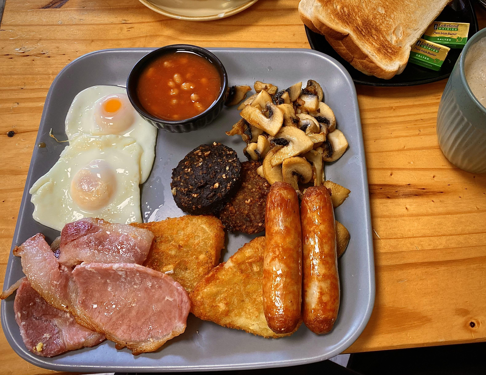
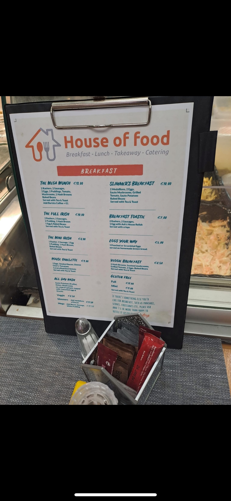

Our Restaurant
Step inside and discover our warm, welcoming atmosphere




House of Food has become a beloved local favorite in Waterford, celebrated for our welcoming atmosphere and commitment to quality breakfast cuisine. Located in the heart of Newtown, we specialize in traditional Irish breakfasts made with locally sourced ingredients and served with genuine Irish hospitality.
Our mission is to provide an authentic Irish breakfast experience that brings the community together, with exceptional food quality and service that keeps customers coming back.
Step inside and discover our warm, welcoming atmosphere
Reach out to us for bookings, questions, or feedback
Unit 6, Park Road Business Centre
Newtown, Waterford, Ireland
Monday-Friday: 8:30 AM - 3:00 PM
Weekends: Hours vary - please call ahead
House of Food - Waterford
on Facebook